Loop engineering
харнесс и при чём тут Python
План
примеры на Claude Code. AGENTS.md, скиллы и MCP понимают и Codex, Cursor, opencode
- Как мы дошли от промптов до петель
- Харнесс на практике: скиллы, хуки, контекст
- Workflows: петля внутри Claude Code
- При чём тут Python: код до и после
2022–2025: от промптов к агентам
- 30 ноября 2022 выходит ChatGPT. Работа сводится к тому, чтобы удачно спросить
- Карпатый, январь 2023: «Самый модный язык программирования — английский»
- В 2023–2024 модели OpenAI и Claude учатся вызывать инструменты
- Anthropic, декабрь 2024: агент — это модель, которая в цикле зовёт инструменты
- 2025: Карпатый придумывает вайб-кодинг, выходит Claude Code, агент переезжает в терминал
openai.com; x.com/karpathy; anthropic.com
2025: главное — контекст
- Тоби Лютке, глава Shopify, июнь 2025: термин context engineering ему нравится больше, чем prompt engineering
- Карпатый: это искусство положить в окно модели ровно то, что нужно для следующего шага
- Anthropic, сентябрь 2025, называет это естественным продолжением работы с промптами
x.com/tobi; x.com/karpathy; anthropic.com
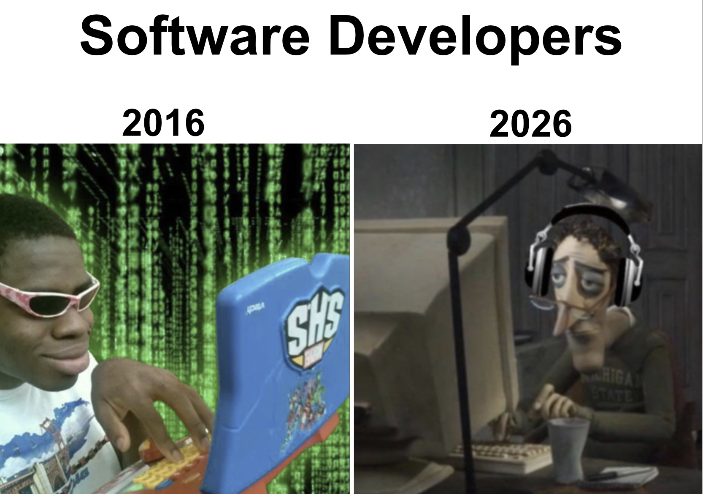
r/ProgrammerHumor, сентябрь 2026
Февраль 2026: харнесс
- Митчелл Хашимото: агент ошибся — доработай среду, чтобы эта ошибка больше не случилась
- Он называет это harness engineering. Через неделю о том же пишет OpenAI
- LangChain, март 2026: всё, что не модель, и есть харнесс
mitchellh.com; openai.com; blog.langchain.com
Июнь 2026: петли
- Борис Черный, создатель Claude Code: «Я больше не пишу промпты. Моя работа — писать петли»
- Петля сама запускает агента и сама решает, когда хватит
- Эдди Османи даёт приёму имя loop engineering
- Её предок — скрипт Ralph 2025 года в одну строку:
while :; do cat PROMPT.md | claude-code; done
addyo.substack.com; ghuntley.com/ralph
Claude: «Проект займёт три месяца». Я: «У тебя три часа»
r/ClaudeCode, июль 2026
Две петли
Какие бывают внешние петли
| Петля |
Когда брать |
Кто останавливает |
/goal |
есть проверяемый финал |
модель-судья после каждого хода |
/loop |
ждать CI или деплой |
ты или конец сессии |
| Ralph |
долгая работа под тестами |
никто, крутится вечно |
| Workflows |
задача делится на части |
скрипт |
| Routines, Actions |
работа по расписанию |
расписание или событие |
| Свой агент на SDK |
свой продукт |
твой код |
По умолчанию бери /goal или /loop. Свой агент на SDK — когда петля становится продуктом
code.claude.com/docs; ghuntley.com/ralph; github.com/anthropics/claude-code-action
Июль 2026: графы?
- Питер Штайнбергер: «Мы ещё про петли или уже про графы?» Твит посмотрели 3 миллиона раз
- Граф — несколько агентов и шагов, связанных между собой. Петля — самый простой граф
- LangChain отвечает: идея не новая, новое только имя
x.com/steipete; langchain.com, 22 июля 2026
AGENTS.md: один файл для всех агентов
- Открытый формат инструкций для агентов. Его используют больше 60 тысяч open source проектов
- Его читают Codex, Cursor, Gemini CLI, Copilot, opencode, Aider, Zed
- В Claude Code подключи его строкой
@AGENTS.md в CLAUDE.md
agents.md, 3 октября 2026
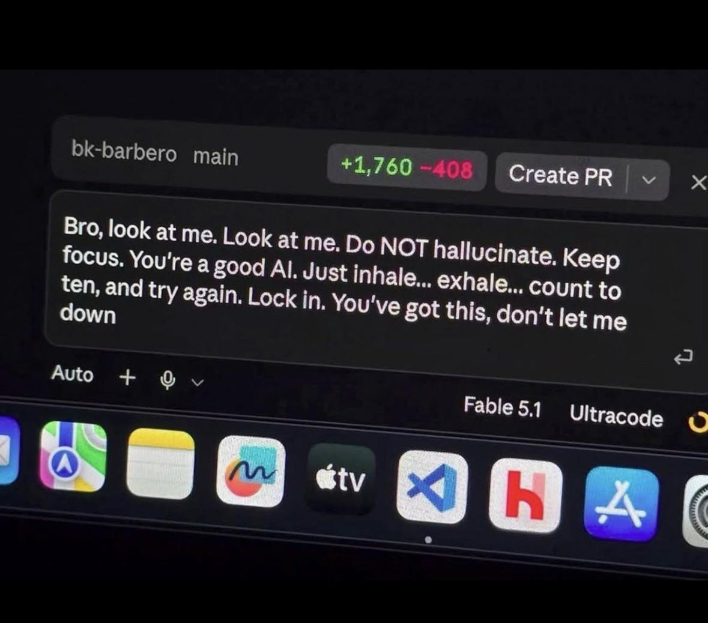
r/vibecoding, сентябрь 2026
grill-me: сначала допрос, потом код
скилл — папка с инструкцией. Агент видит только её описание и читает целиком, когда она нужна
- Агент расспрашивает тебя о плане, пока не закроет все развилки
- Так лечится главная беда: агент понял задачу не так, как ты
- Самый популярный скилл Мэтта Покока: 1,3 миллиона установок
- Рядом лежат
diagnosing-bugs и handoff: поиск бага через тест и передача работы другому агенту
- Ставится в любой агент:
npx skills add mattpocock/skills
github.com/mattpocock/skills; skills.sh
superpowers или Покок
- superpowers, 295k ★, даёт весь процесс сразу: идея, план, тесты, субагенты, проверка
- Скиллы Покока, 275k ★, маленькие. Ты сам решаешь, какие взять и как их поправить
- Покок: готовые процессы вроде GSD и BMAD забирают у тебя контроль, и баги в них трудно чинить
- Мы выбираем Покока: так процесс остаётся под нашим контролем
README obra/superpowers и mattpocock/skills
r/ProgrammerHumor, сентябрь 2026
Свои скиллы: контекст вашей команды
делаем скиллом skill-creator из anthropics/skills: он пишет скилл и проверяет его на тестовых запросах
- Готовые скиллы не знают вашу команду. Свой скилл знает
- В него хорошо ложатся ваши CLI: как найти логи, завести задачу, выкатить релиз
- Знания о команде: стенды, адреса, правила веток, кто за что отвечает
github.com/anthropics/skills; agentskills.io
Хуки опасны
хук запускается сам: на каждое событие и в каждой сессии
- У меня был скилл, который на старте каждой сессии индексировал весь код через rg
- rg зависал, а новые сессии запускали его снова и снова
- Память мака кончилась, Spotlight и Касперский начали падать
- Ставь хуку таймаут и узкую цель. Проверяй его на самом большом репозитории
claude-hud: всё видно сразу
контекст, лимиты, работающие инструменты и субагенты прямо под строкой ввода
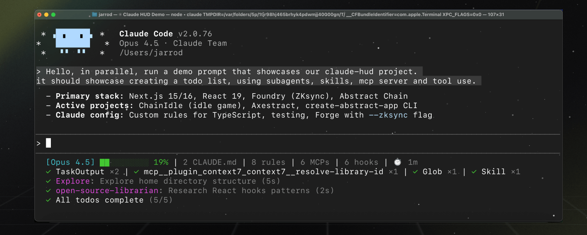
jarrodwatts/claude-hud, 28k ★. Похожий ccstatusline, 13k ★
Куда уходят деньги
$13
средний активный день разработчика в Claude Code. У 90% меньше $30
чтение
больше всего платим за то, что модель читает, а не пишет
документация Claude Code, раздел Costs
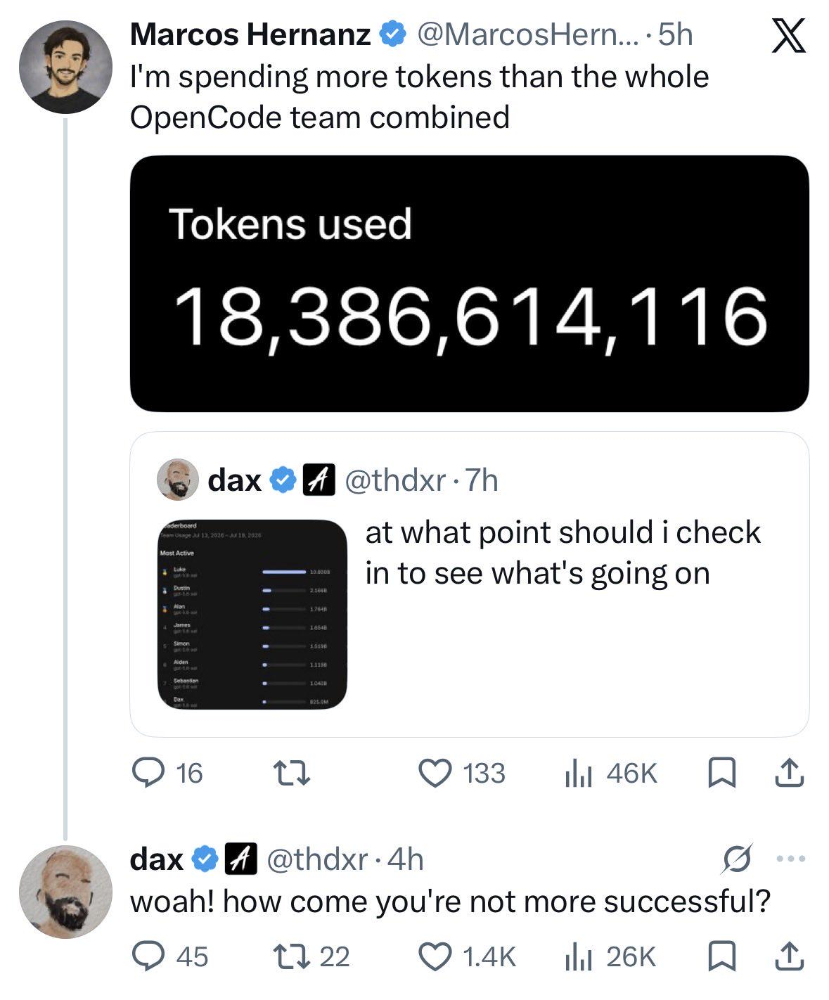
r/ClaudeCode, июль 2026
Контекст гниёт
промпт, правила, скиллы, MCP и вывод команд лежат в одном окне и оплачиваются на каждом шаге
- Context rot: чем больше токенов в окне, тем хуже модель вспоминает, что в нём лежит
- Lost in the middle: середину длинного контекста модель видит хуже, чем начало и конец
- Правил тоже бывает много: при 500 инструкциях лучшие модели выполняют 68% из них
- Мало контекста — агент гадает. Много — забывает и путается. Попасть посередине очень трудно
Anthropic, сентябрь 2025; Liu и др., arXiv 2307.03172; IFScale, arXiv 2507.11538
Экономия словами: что написать в AGENTS.md
- Не читай файлы и ответы API целиком. Разбирай их скриптом и смотри только вывод
- Субагенту ставь самую дешёвую модель, которая справится
- Ещё дешевле запустить внешнего агента на дешёвой модели и взять из его вывода только итог
Не грузить всё сразу: MCP и скиллы
- Tool search подгружает описание MCP-инструмента, только когда он нужен. Минус 85% на описаниях
- Он выключается сам, если агент ходит через прокси. Включи:
ENABLE_TOOL_SEARCH=true
- Со скиллами та же беда. skillgrep держит редкие скиллы вне каталога и находит нужный по запросу
Anthropic, «Advanced tool use»; github.com/vrslev/skillgrep, npx skills add vrslev/skillgrep
context-mode
mksglu/context-mode, 25k ★
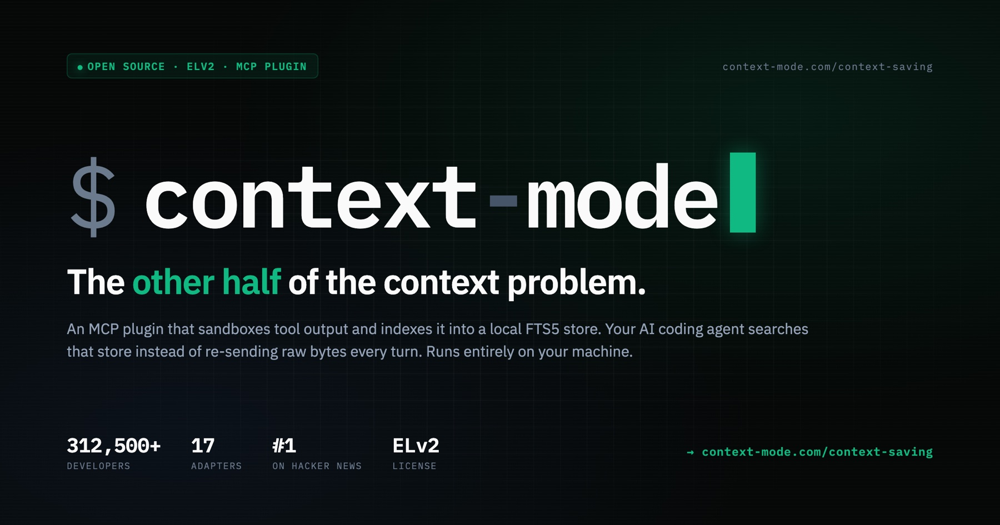
- Длинный вывод команд остаётся в песочнице. Агенту уходит только итог
- Авторы: 315 КБ превращаются в 5,4 КБ
- Работает как MCP-сервер и набор хуков
rtk
rtk-ai/rtk, 82k ★, написан на Rust
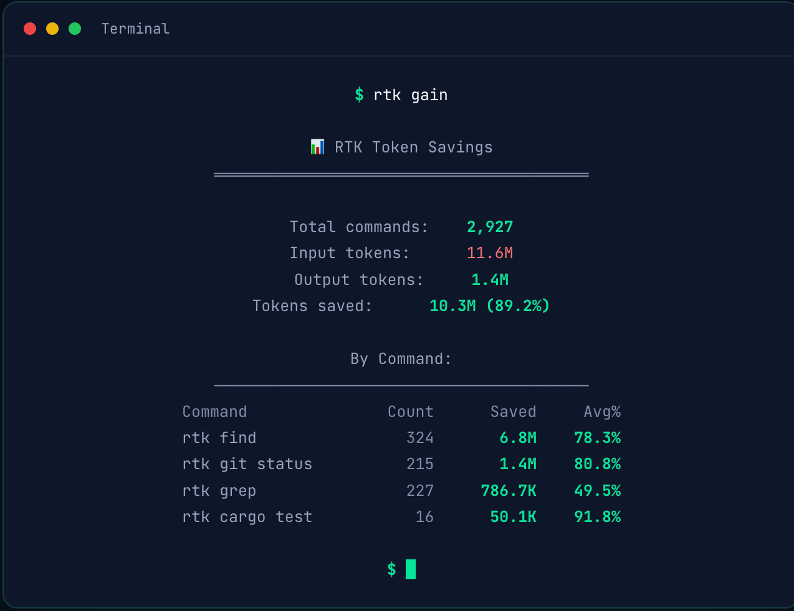
- Хук незаметно меняет
git status на rtk git status и сокращает вывод
- Авторы обещают сжать вывод Bash до 90%. Но честно пишут, что счёт падает меньше
- Read, Grep и Glob идут мимо: хук видит только Bash
Мой rtk gain
18 495 команд, по счётчику rtk сэкономлено 49,8 млн токенов, 54%. Больше всего на rg
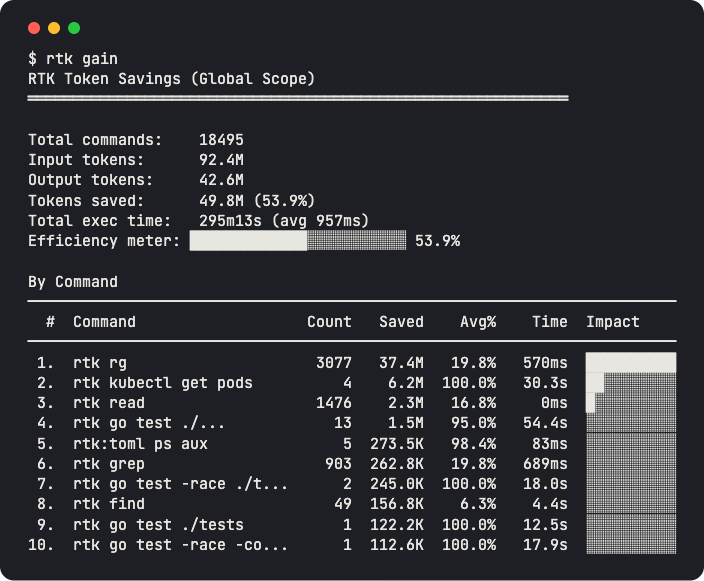
rtk: что говорят критики
- Он сжимает только вывод Bash, а это 3–6% счёта по оценке самих авторов
- JetBrains: на низком усилии с rtk вышло на 7,6% дороже, на высоком разницы нет
- Счётчик rtk считает токены как байты, делённые на 4, и завышает экономию
- Были баги:
tsc с ошибкой отвечал «No errors found». Их исправили
README rtk; блог JetBrains; issues в rtk-ai/rtk; Hacker News
serena: навигация по коду вместо grep
oraios/serena, 30k ★. MCP-сервер поверх языковых серверов, как в IDE
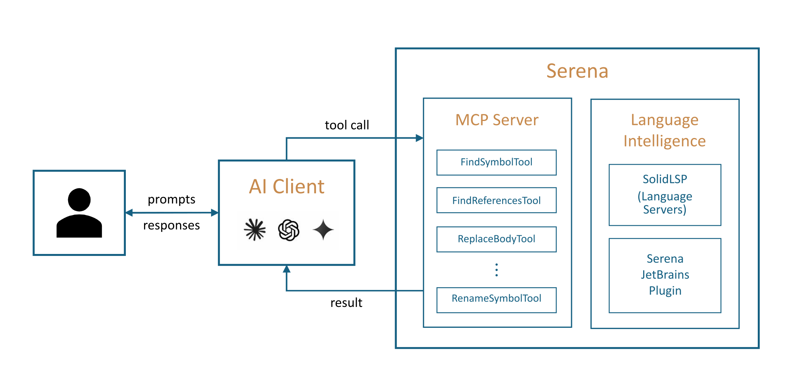
- grep находит строки, а потом агент читает файлы целиком
- serena ищет по символам: где функция, кто её вызывает, как заменить её тело
- По привычке агент тянется к grep. Пропиши в AGENTS.md, что код ищется через serena
caveman: агент говорит как пещерный человек
−65%
токенов обещает README
−8,5%
выходных токенов в лучшем случае намерили JetBrains. Качество не изменилось
JuliusBrussee/caveman, 109k ★; блог JetBrains, июль 2026
ponytail: агент пишет меньше кода
на 12 задачах: на 54% меньше строк и на 22% меньше токенов. Замер автора, Haiku 4.5
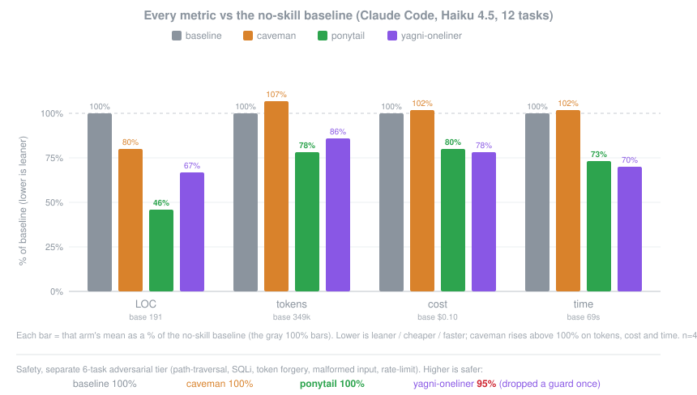
DietrichGebert/ponytail, 152k ★
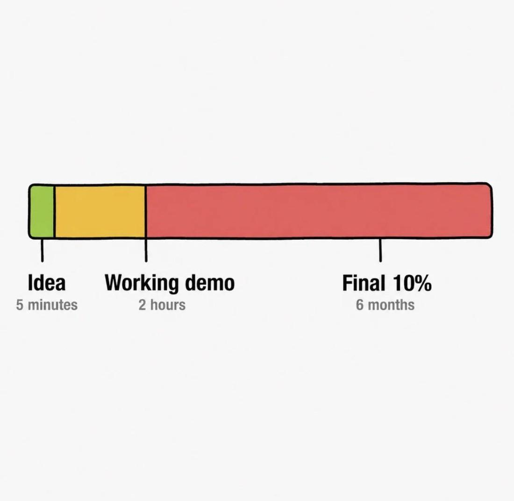
r/vibecoding, сентябрь 2026
Workflows: петля внутри Claude Code
вышли 28 мая 2026. Запуск: слово ultracode в запросе, удачный workflow сохраняется в .claude/workflows/
- Скрипт раздаёт задачи субагентам, а в разговор возвращается только итог
- Обычный агент держит план в своём контексте. Здесь план записан в коде и не теряется
- Bash-петля вроде Ralph гоняет одну задачу по кругу. Workflow раздаёт разные задачи и сверяет ответы
- Минусы: это дорого, и посреди запуска нельзя ничего спросить у человека
code.claude.com/docs; CHANGELOG Claude Code 2.1.154; сравнение с Ralph — наш вывод
Пример: разбор моих 50 сессий
«ultracode: просмотри мои последние 50 сессий, найди повторяющиеся ошибки и предложи, где их закрепить»
- Workflow отдаёт каждую сессию отдельному субагенту, до 16 одновременно. Тот возвращает короткую сводку
- Следующий агент ищет повторы во всех сводках, ещё один их перепроверяет
- На выходе предложения: правило в AGENTS.md, свой скилл или хук
- Почему это хороший пример: сессии большие и независимые, а мне в контекст приходит только итог
pylines: наши правила для Python
- Правила для fullstack на Python и TypeScript от community-of-python
- Ставится как скилл:
npx skills add https://github.com/community-of-python/pylines -g
- Скилл раз в час сам подтягивает свежие правила из GitHub
- Код проверяют ruff со всеми правилами, строгий mypy и свой плагин для flake8
github.com/community-of-python/pylines
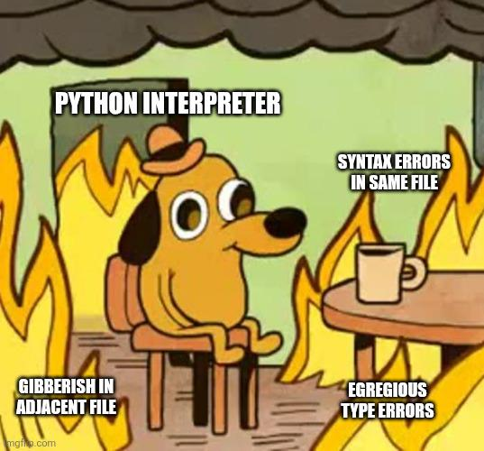
r/ProgrammerHumor, сентябрь 2026
Было
типичный код: короткие имена, голый except, магическое число, print
import requests
def get_total(uid, vip=False, statuses=["paid"]):
try:
r = requests.get(f"https://shop.example/api/orders?user={uid}")
d = r.json()
except:
print("ERROR!!!")
return 0
tmp = 0
for x in d:
if x["status"] in statuses:
if vip:
tmp += x["amount"] * 0.9
else:
tmp += x["amount"]
print("total:", tmp)
return tmp
Стало: данные
константы вместо магии, модель ответа вместо словаря
import decimal
import typing
import httpx
import pydantic
import stamina
ORDERS_URL: typing.Final = "https://shop.example/api/orders"
PAID_STATUSES: typing.Final = frozenset({"paid"})
VIP_DISCOUNT: typing.Final = decimal.Decimal("0.9")
RETRY_ATTEMPTS: typing.Final = 3
@typing.final
class OrderPayload(pydantic.BaseModel):
order_status: str = pydantic.Field(alias="status")
order_amount: decimal.Decimal = pydantic.Field(alias="amount")
ORDERS_ADAPTER: typing.Final = pydantic.TypeAdapter(list[OrderPayload])
Стало: функция
@stamina.retry(on=httpx.HTTPError, attempts=RETRY_ATTEMPTS)
async def calculate_paid_total(
http_client: httpx.AsyncClient,
*,
customer_id: int,
is_vip_client: bool = False,
order_statuses: frozenset[str] = PAID_STATUSES,
) -> decimal.Decimal:
http_response: typing.Final = await http_client.get(ORDERS_URL, params={"user": customer_id})
http_response.raise_for_status()
paid_total: typing.Final = sum(
(one_order.order_amount
for one_order in ORDERS_ADAPTER.validate_json(http_response.content)
if one_order.order_status in order_statuses),
start=decimal.Decimal(0),
)
if is_vip_client:
return paid_total * VIP_DISCOUNT
return paid_total
Линтер ловит не всё
20
ошибок в «было» нашли ruff, mypy и плагин pylines. В «стало» осталось одно замечание: нет строки с копирайтом
4
проблемы не нашёл ни один линтер: get_, число 0.9, доступ по ключу, нет ретраев
Их ловят только правила, которые агент прочитал в скилле
прогон с pyproject.toml из pylines, 3 октября 2026
Пирамида или ромб
- Пирамида: юнитов больше всего, e2e меньше всего
- Ромб: основа — тесты через ручку, CLI или обработчик сообщения, приложение собрано целиком
- Юниты под запретом: они привязаны к устройству кода и ломаются при рефакторинге
tests.md в pylines
Что пишет агент без правил
иллюстрация: по тесту на каждое значение, хардкод и моки внутренностей
def test_get_total_1():
assert get_total([{"status": "paid", "amount": 100}]) == 100
def test_get_total_2():
assert get_total([{"status": "paid", "amount": 200}]) == 200
def test_get_total_3():
assert get_total([{"status": "new", "amount": 100}]) == 0
def test_get_total_4():
assert get_total([{"status": "paid", "amount": 100}], vip=True) == 90.0
@patch("app.orders.requests.get")
def test_get_total_mocked(mock_get):
mock_get.return_value.json.return_value = [{"status": "paid", "amount": 100}]
assert get_total(1) == 100
# ...и ещё 140 таких же
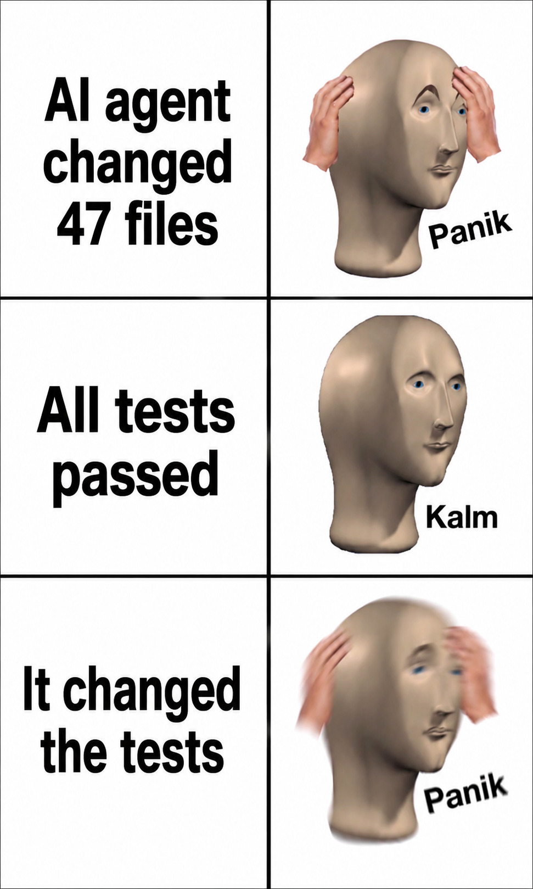
r/ProgrammerHumor, июль 2026
Чего хочется: тест через ручку
один тест проходит приложение целиком, от HTTP до хранилища. Данные даёт faker
def test_should_reject_invalid_email_via_api(faker: Faker) -> None:
client: typing.Final = TestClient(app=create_application())
invalid_payload: typing.Final = {"email": faker.word(), "password": faker.password()}
response: typing.Final = client.post("/api/users", json=invalid_payload)
assert response.status_code == 422
assert "email" in response.json()["detail"]
Получается с переменным успехом: агент всё равно тянется к юнитам, и правило приходится повторять
по примеру из tests.md в pylines
TDD: польза не доказана
- Для людей исследования противоречат друг другу: где-то плюс к качеству, где-то разницы нет
- В экспериментах важнее мелкие шаги, чем порядок «сначала тест»
- Агенту заметно помогают готовые тесты, которые написал человек
- Но агент может подогнать код под тесты или переписать сами тесты
Rafique, Mišić, 2013; Fucci и др., 2017; Mathews, Nagappan, 2024; ImpossibleBench
Без харнесса — нейрослоп
- Модель та же самая. Код другой, потому что у агента были правила
- pylines даёт правила, ruff и mypy проверяют каждую правку, pytest решает, когда можно остановиться
- Без этого даже сильный агент быстро выдаёт код из слайда «Было»
- И саму петлю, и хуки пишут на Python: OpenAI Agents SDK, Claude Agent SDK
Собрать за вечер
- Держи AGENTS.md коротким, до 200 строк, и очищай контекст между задачами
- Поставь скиллы Покока и начни с grill-me
- Подключи pylines, чтобы агент писал Python по правилам
- Добавь хуки: ruff после каждой правки и pytest перед тем, как агент скажет «готово»
- Поставь context-mode и rtk, чтобы агент читал меньше мусора
Спасибо
- agents.md
- skills.sh
- github.com/mattpocock/skills
- github.com/community-of-python/pylines
Как вам доклад?
наведите камеру и оставьте отзыв, это займёт минуту